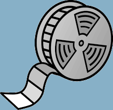

De bruiloft
Om beter te begrijpen wat een trauma is zullen we dit leren aan de hand van een verhaal. In dit geval een verhaal over een bruiloft.


Om beter te begrijpen wat een trauma is zullen we dit leren aan de hand van een verhaal. In dit geval een verhaal over een bruiloft.
Een bruiloftsdag is altijd druk en intens. Er gebeurt veel: de bruid wordt opgehaald, lunch, naar de kerk, receptie, diner en een feest. Aan het eind van een drukke bruiloftsdag gaat iedereen weg en blijft het paar samen over.

Vanaf dat moment verschijnen er in het hoofd fragmenten van gebeurtenissen die zich die dag hebben afgespeeld. Dit zijn net korte filmpjes. Doordat de dag te intensief is geweest om alle gebeurtenissen direct te verwerken, gebeurt dat achteraf
Bij het echtpaar zullen de filmpjes na een paar dagen minder voorkomen. Na een week of twee zien ze deze filmpjes niet meer. Ze hebben de dag ‘verwerkt.’

Bij een ingrijpende gebeurtenis gebeurt eigenlijk hetzelfde. Het grote verschil is dat bij iets traumatisch de kleine filmpjes in het hoofd heel naar zijn. Deze kunnen nare gevoelens veroorzaken.

Nare gevoelens worden liever vermeden en daarom worden de filmpjes vroegtijdig gestopt. Daarom kan je deze filmpjes niet verwerken.